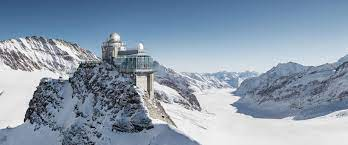
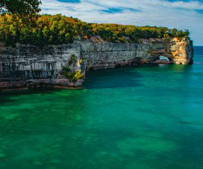
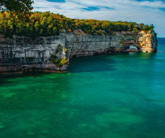
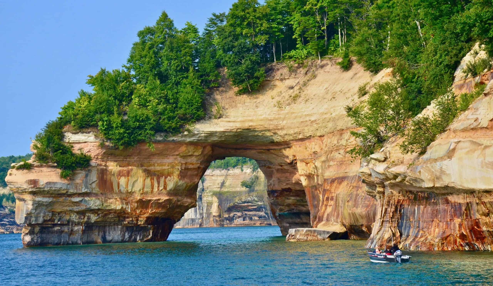

Yellowstone


Geographical Location: North America
Yellowstone is the first national park in the United States. It covers over 2.2 million acres, and provides an opportunity to see wildlife and explore geothermal areas. In fact, Yellowstone contains about half the world's active geysers.
These unique opportunities also bring out a lot of bad decisions among the tourists. Every year visitors injure themselves or the wildlife by getting close to the animals. You can see examples of people making bad decisions by visiting Yellowstone National Park: Invasion of the Idiots, Tourons of Yellowstone, or Cowboy State Daily.
Photo Gallery

Mammoth Hot Springs has a number of actively forming Travertine terraces.

The drive to Lamar Valley requires some dangerous roads. But the result is amazing sunset views.
The multicolored layers get their hues from different species of bacteria living in the cooler water around the spring.
The buffalo were so common along the roads in Yellowstone that our mantra became "If it ain't lickin the car, we aren't stopping."

If you can handle the odor, the Yellowstone Sulphur Springs is a great place to hike.
Jungfrau, Switzerland


Geographical Location: Europe
Jungfrau is a city in Switzerland known for its mountain summits nicknamed the “top of Europe.” It is very famous also for its railway created in 1912 that can bring you to a height of 3454m. At the summit there are outstanding views where you can see the whole city and beyond.
The scenery consists of valleys, waterfalls, rock walls, and snow peaks. When visiting, it is vital to go on a day with good weather because it enhances the quality of the views. Hiking is very popular at short trails called Grutschalp and Murren. A very common tourist attraction is also exploring the Lauterbrunnen valley.
Photo Gallery
Tourists can take the train and elevator up to that building on summit.

Train on railway that takes you to the top of the summit.

Houses located in Jungfrau for people to stay at.

Body of water located in Jungfrau fun for swimming.

Tourists can go to the spot to look out over the country.
Pictured Rocks National Lakeshore, Michigan
 

Geographical Location: North America
Pictured Rocks National Lakeshore, America's first National Lakeshore, is along the southern shore of Lake Superior in Michigan's beautiful Upper Peninsula. With stunning beaches, 10 inland lakes, and nearly 100 miles of trails, everyone can find something to enjoy at Pictured Rocks!
No matter the time of year, there is something to do at Pictured Rocks! Summer: visit beaches, backpack, and camp (permit required). Looking for views of the cliffs? The best way to see the cliffs is from the water on a commercial boat tour. Fall: Autumn colors in the Upper Peninsula are often breathtaking, drive the park roads to view the changing leaves! Hunting and fishing opportunities (state regulations apply) abound during fall! Winter: Cold weather brings otherworldly frozen waterfalls, called “curtains”. Snowshoeing, skiing, and ice fishing are other popular winter activities. Check road closures and conditions before heading into the park in the winter. Spring: Go birding or walk the marsh trail!
Photo Gallery

The pictured rocks lakeshore is stunning at sunset.
One of the many lakeshore views is an arch over the water.

Miners falls is one of Pictured Rocks' many waterfalls and gorgeous hikes.

The pictured rocks beach is an amazing place to spend a day in Munising.

Pictured Rocks also features campsites
Dublin, Ireland


Geographical Location: Western Europe
Dublin City is the capital city of the Republic of Ireland and is located in the east of Ireland. Dublin was originally a Viking settlement called Dubh Linn which translates to black pool. Dublin has always been a historically significant city in Irish history, from being the main city from which the British ruled over Ireland for 800 years to then being the setting of the 1916 Easter Rising and Irish War of Independence.
Today Dublin is a developed city boasting one of the strongest tech sectors in Europe and a booming tourism industry. Dublin is renowned for its sites such as the GPO, Croke Park, O'Connell Street, Temple Bar and Saint James Gate, which is where Guinness is brewed. Dublin is also surrounded by great coastal towns such as Dun Laoghaire, Howth and Skerries.
Photo Gallery

Used in the 1916 Easter Rising as a rebel holdout. Scars from the battle such as bullet holes are still visible on its pillars today.

Croke Park is Ireland's largest stadium, known for hosting the All-Ireland football and hurling finals annually. It has a capacity of 82,300 making it the 4th largest stadium in Europe.

O'Connell Street is Ireland's main street. It's named after Daniel O'Connell, an Irish politician who fought for the unrepresented Irish catholics to have a voice in the British parliament whilst Ireland was still under British rule. A statue was built in his honor at the end of the street.

Temple Bar is an area of Dublin City Centre that is named after the world famous pub, the Temple Bar. It is a tourist hotspot and is the only pub in Ireland where you will not find a single Irish person. It is also known to have one of the most expensive pints of Guinness in Ireland.

Saint James's Gate is where Guinness is brewed. You are able to do a tour of the facility to see the history of Guinness, how Guinness is brewed and have a pint right from the source.